Click on the image above to view the table
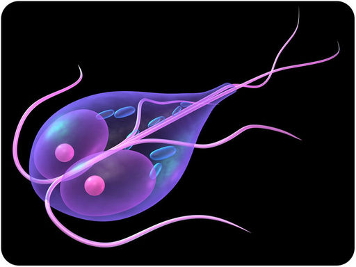
This organism consists of a single cell with several flagella. Is it a prokaryote, such as a bacterium? Actually, it’s larger than a prokaryotic cell, and it also has a nucleus. Therefore, this organism belongs to the domain Eukarya, the domain that includes humans. This particular eukaryote is one of the smallest, simplest organisms in the domain, called a protist. It’s scientific name is Giardia lamblia. As a human parasite, it can make us sick.
In this chapter, you’ll read more about protists like Giardia lamblia. You’ll discover that protists have a wide diversity of traits and ways of life. And only some of them make us sick.
Protists are the simplest eukaryotes. They are easiest to define by what they are not. Protists are not animals, plants, or fungi.
The protist kingdom is sometimes called the “trash can” kingdom. It includes all eukaryotes that don’t fit in one of the other three eukaryote kingdoms: Animalia, Plantae, or Fungi. There are thought to be between 60,000 and 200,000 protist species. Many have yet to be identified. The protist kingdom is very diverse, as shown in Figure below .
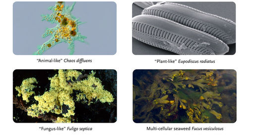
Protists range from single-celled amoebas to multicellular seaweed. Protists may be similar to animals, plants, or fungi.
Scientists think that protists are the oldest eukaryotes. If so, they must have evolved from prokaryotic cells. How did this happen? The endosymbiotic theory provides the most widely-accepted explanation. That’s because it is well supported by evidence.
According to the endosymbiotic theory, the first eukaryotic cells evolved from a symbiotic relationship between two or more prokaryotic cells. Smaller prokaryotic cells were engulfed by (or invaded) larger prokaryotic cells. The small cells (now called endosymbionts) benefited from the relationship by getting a safe home and nutrients. The large cells (now called hosts) benefited by getting some of the organic molecules or energy released by the endosymbionts. Eventually, the endosymbionts evolved into organelles of the host cells. After that, neither could live without the other.
As shown in Figure below , some of the endosymbionts were aerobic bacteria. They were specialized to break down chemicals and release energy. They evolved into the mitochondria of eukaryotic cells. Some of the small cells were cyanobacteria. They were specialized for photosynthesis. They evolved into the chloroplasts of eukaryotic cells.
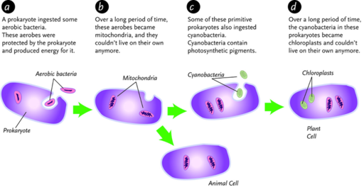
Endosymbiotic theory explains how eukaryotic cells arose.
Many pieces of evidence support the endosymbiotic theory. For example:
Like all other eukaryotes, protists have a nucleus containing their DNA. They also have other membrane-bound organelles, such as mitochondria. Most protists are single-celled. Some are multicellular. Because the protist kingdom is so diverse, their ways of getting food and reproducing vary widely.
Most protists are aquatic organisms. They need a moist environment to survive. They are found mainly in damp soil, marshes, puddles, lakes, and the ocean. Some protists are free-living organisms. Others are involved in symbiotic relationships. They live in or on other organisms, including humans.
Most protists have motility . This is the ability to move. Protists have three types of appendages for movement. As shown in Figure below , they may have flagella, cilia , or pseudopods (“false feet”). There may be one or more whip-like flagella. Cilia are similar to flagella, except they are shorter and there are more of them. They may completely cover the surface of the protist cell. Pseudopods are temporary, foot-like extensions of the cytoplasm.
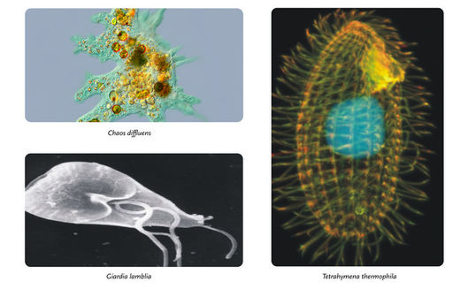
Protists use flagella, cilia, or pseudopods to move.
Protists have complex life cycles. Many have both asexual and sexual reproduction. An example is a protist called Spirogyra , a type of algae, shown Figure below . It usually exists as haploid cells that reproduce by binary fission. In a stressful environment, such as one that is very dry, Spirogyra may produce tough spores that can withstand harsh conditions. Spores are reproductive cells produced by protists (and other organisms). If two protist spores are close together, they can fuse to form a diploid zygote. This is a type of sexual reproduction. The zygote then undergoes meiosis, producing haploid cells that repeat the cycle.
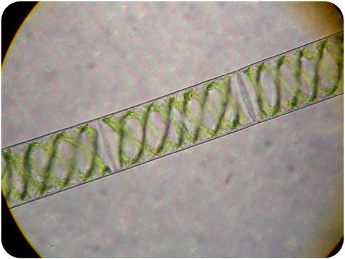
Spirogyra is a genus of algae with a complex life cycle. Each organism consists of rectangular cells connected end-to-end in long filaments.
Protists get food in one of three ways. They may ingest, absorb, or make their own organic molecules.
1. What are protists?
2. How did the first eukaryotic cells evolve, according to endosymbiotic theory?
3. Identify three structures that protists use to move.
4. Describe three ways that protists get food.
5. A mystery organism consists of one cell. It could be a protist or a prokaryote. What single fact about the mystery cell would allow you to determine which type of organism it is? Explain your answer.
6. Identify one piece of evidence for endosymbiotic theory. Explain how this evidence supports the theory.
7. Compare and contrast asexual and sexual reproduction in protists.
Protists are traditionally classified as animal-like, plant-like, or fungi-like. You will read more about each of these types of protists in the next lesson.
Protists are often classified based on how similar they are to other eukaryotes—animals, plants, and fungi. This lesson describes protists that resemble each of these other eukaryote kingdoms.
Animal-like protists are commonly called protozoa (singular, protozoan). Most protozoa consist of a single cell. They are animal-like because they are heterotrophs, and are capable of moving. Although protozoa are not animals, they are thought to be the ancestors of animals.
Protozoa generally feed by engulfing and digesting other organisms. As consumers, they have various roles in food chains and webs. Some are predators. They prey upon other single-celled organisms, such as bacteria. In fact, protozoa predators keep many bacterial populations in check. Other protozoa are herbivores. They graze on algae. Still others are decomposers. They consume dead organic matter. There are also parasitic protozoa that live in or on living hosts. For example, the protozoan that causes malaria lives inside a human host. For their part, protozoa are important food sources for many larger organisms, including insects and worms.
Protozoa can be classified on the basis of how they move. As shown in Table below , protozoa move in three different ways. Only sporozoa cannot move. Note that this classification is based only on differences in movement. It does not represent phylogenetic relationships.
Click on the image above to view the table
Plant-like protists are called algae (singular, alga). They are a large and diverse group. Some algae, diatoms, are single-celled. Others, such as seaweed, are multicellular (see Figure below ).
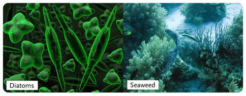
Diatoms are single-celled algae. Other forms of algae are multicellular.
Why are algae considered plant-like? The main reason is that they contain chloroplasts and produce food through photosynthesis. However, they lack many other structures of true plants. For example, algae do not have roots, stems, or leaves. Some algae also differ from plants in being motile. They may move with pseudopods or flagella. Although not plants themselves, algae were probably the ancestors of plants.
Algae play significant roles as producers in aquatic ecosystems. Microscopic forms live suspended in the water column. They are the main component of phytoplankton. As such, they contribute to the food base of most marine ecosystems.
Multicellular seaweeds called kelp may grow as large as trees. They are the food base of ecosystems called kelp forests (see Figure below ). Kelp forests are found throughout the ocean in temperate and arctic climates. They are highly productive ecosystems.
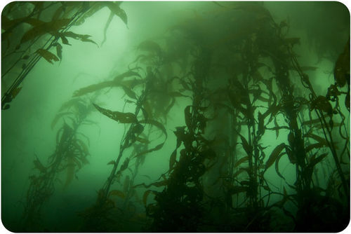
Kelp Forest. This kelp forest supports a large community of many other types of organisms.
Types of algae include red and green algae, euglenids, and dinoflagellates (see Table below for examples). Scientists think that red and green algae evolved from endosymbiotic relationships with cyanobacteria. Their chloroplasts have two membranes because the cell membranes of the cyanobacteria became additional plasma membranes of the chloroplasts. Scientists think that euglenids and dinoflagellates evolved later, from endosymbiotic relationships with green and red algae. This is why their chloroplasts have three membranes. Differences in the types of chlorophyll in the four types of algae also support the hypothesized evolutionary relationships.
Click on the image above to view the table
Algae have varied life cycles. Two examples are shown in Figure below . Both cycles include phases of asexual reproduction (haploid, n ) and sexual reproduction (diploid, 2n ). Why go to so much trouble to reproduce? Asexual reproduction is fast, but it doesn’t create new genetic variation. Sexual reproduction is more complicated and risky, but it creates new gene combinations. Each strategy may work better under different conditions. Rapid population growth is adaptive when conditions are favorable. Genetic variation helps ensure that some organisms will survive if the environment changes.
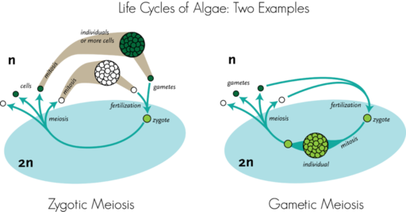
Life Cycles of Algae: Two Examples - Zygotic meiosis and Gametic meiosis. In life cycle A (left), diploid (2n) zygotes undergo meiosis and produce haploid (n) gametes. The gametes undergo mitosis and produce many additional copies of themselves. How is life cycle B (right) different from life cycle A?
QUEST explores the potential of algae-–once considered nothing more than pond scum–-to become the fuel of the future. Entrepreneurs from throughout California are working to create the next generation of biofuels from algae. But will you ever be able to run your car off it? See http://www.kqed.org/quest/television/algae-power for additional information.

Click on the image above for more content
Fungus-like protists are molds. They are absorptive feeders on decaying organic matter. They resemble fungi, and they reproduce with spores as fungi do. However, in other ways, they are quite different from fungi and more like other protists. For example, they have cell walls made of cellulose, whereas fungi have cell walls made of chitin. Like other protists, they have complicated life cycles with both asexual and sexual reproduction. They are motile cells during some stages of their life cycle. Two major types of fungus-like protists are slime molds and water molds.
Slime molds are fungus-like protists commonly found on rotting logs and compost. They move very slowly in search of decaying matter to eat. When food is scarce, individual cells swarm together to form a blob-like mass, like the “dog vomit” slime mold in Figure below . The mass glides along on its own secretions, engulfing decaying organic matter as it moves over it.
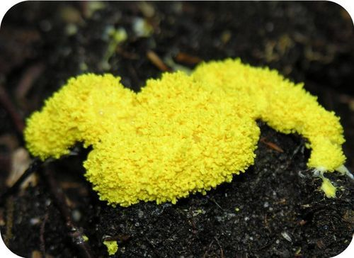
“Dog Vomit” Slime Mold. This slime mold looks like its name.
There are two types of slime molds when it comes to how they swarm: acellular and cellular.
Cellular slime molds are used as model organisms in molecular biology and genetics. They may be the key to how multicellular organisms evolved. Can you explain why?
Water molds are commonly found in moist soil and surface water. Many are plant pathogens that destroy crops. They infect plants such as grapes, lettuce, corn, and potatoes. Some water molds are parasites of fish and other aquatic organisms.
1. How are protozoa similar to animals?
2. What roles do protozoa play in food chains and webs?
3. State pros and cons of asexual and sexual reproduction in algae.
4. How are fungus-like protists similar to fungi? What is one way they are different?
5. Assume that a new species of organism has been discovered and it’s your job to classify it. The organism consists of a single cell with a nucleus. It has cilia and obtains food by consuming other single-celled organisms. Name a genus that the new species could possibly be placed in. Explain your answer.
6. Compare and contrast algae and plants.
7. Explain why dinoflagellates and euglenids have chloroplasts with three membranes instead of two.
8. Why might cellular slime molds—but not acellular slime molds—be the key to how multicellular organisms evolved?
In this lesson you read about slime molds and water molds. These aren’t the only kinds of molds. In fact, you are probably more familiar with molds that are classified as fungi. The next lesson introduces the fungi.
Do you see the organisms growing on the bread in Figure below ? They belong to the Kingdom Fungi. Molds growing on foods are some of the most common fungi in our everyday lives. These organisms may seem useless, gross, and costly. But fungi play very important roles in almost every terrestrial ecosystem on Earth.
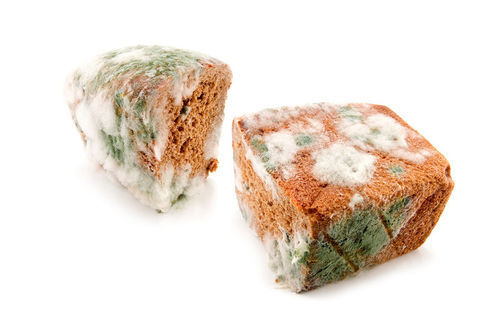
The mold growing on this bread is a common fungus.
Fungi (singular, fungus) are a kingdom in the domain Eukarya. The fungi kingdom may contain more than a million species, but fewer than 100,000 have been identified. As shown in Figure below , fungi include mushrooms and yeasts in addition to molds.
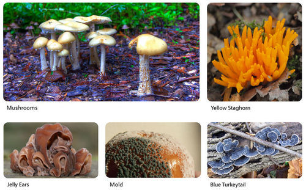
Several examples of fungi are pictured here.
Most fungi are multicellular, but some exist as single cells. Fungi spend most of their life cycle in the haploid state. They form diploid cells only during sexual reproduction. Like the cells of protists and plants, the cells of fungi have cell walls. But fungi are unique in having cell walls made of chitin instead of cellulose. Chitin is a tough carbohydrate that also makes up the exoskeleton (outer skeleton) of insects and related organisms.
You probably already know where some species of fungi live. No doubt, you’ve seen them growing on rotting logs and moist soil. In fact, most fungi live on dead matter or soil. However, some fungi are aquatic. Others live in or on other organisms in symbiotic relationships.
Except for yeasts, which grow as single cells, most fungi grow as thread-like filaments, like those shown in Figure below . The filaments are called hyphae (singular, hypha). Each hypha consists of one or more cells surrounded by a tubular cell wall. A mass of hyphae make up the body of a fungus, which is called a mycelium (plural, mycelia).
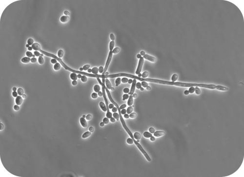
These branches are hyphae, or filaments, of a mold called Penicillium.
A mycelium may range in size from microscopic to very large. In fact, one of the largest living organisms on Earth is the mycelium of a single fungus. A small part of a similar fungus is pictured in Figure below . The giant fungus covers 8.9 square kilometers (3.4 square miles) in an Oregon forest. That’s about the size of a small city. The fungus didn’t grow that large over night. It’s estimated to be 2,400 years old—and it’s still growing!
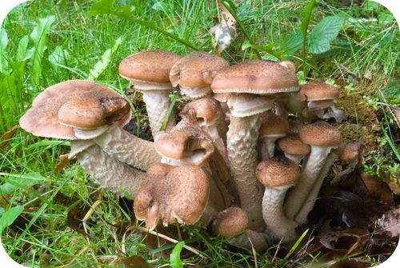
This fungus, Armillaria ostoyae, has been dubbed the “humongous fungus” because it is part of a colony that covers hundreds of acres.
The majority of fungi can reproduce both asexually and sexually. This allows them to adjust to conditions in the environment. They can spread quickly through asexual reproduction when conditions are stable. They can increase their genetic variation through sexual reproduction when conditions are changing and variation may help them survive.
Almost all fungi reproduce asexually by producing spores. A fungi spore is a haploid cell produced by mitosis from a haploid parent cell. It is genetically identical to the parent cell. Fungi spores can develop into new haploid individuals without being fertilized.
Spores may be dispersed by moving water, wind, or other organisms. Some fungi even have “cannons” that “shoot” the spores far from the parent organism. This helps to ensure that the offspring will not have to compete with the parents for space or other resources. You are probably familiar with puffballs, like the one in Figure below . They release a cloud of spores when knocked or stepped on. Wherever the spores happen to land, they do not germinate until conditions are favorable for growth. Then they develop into new hyphae.

Puffballs release spores when disturbed.
Yeasts do not produce spores. Instead, they reproduce asexually by budding. Budding is the pinching off of an offspring from the parent cell. The offspring cell is genetically identical to the parent. Budding in yeast is pictured in Figure below .
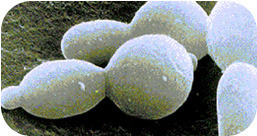
Yeast reproduce asexually by budding.
Sexual reproduction also occurs in virtually all fungi. This involves mating between two haploid hyphae. During mating, two haploid parent cells fuse, forming a diploid spore called a zygospore . The zygospore is genetically different from the parents. After the zygospore germinates, it can undergo meiosis, forming haploid cells that develop into new hyphae.
DNA evidence suggests that almost all fungi have a single common ancestor. The earliest fungi may have evolved about 600 million years ago or even earlier. They were probably aquatic organisms with a flagellum. Fungi first colonized the land at least 460 million years ago, around the same time as plants. Fossils of terrestrial fungi date back almost 400 million years (see Figure below ). Starting about 250 million years ago, the fossil record shows fungi were abundant in many places. They may have been the dominant life forms on Earth at that time.
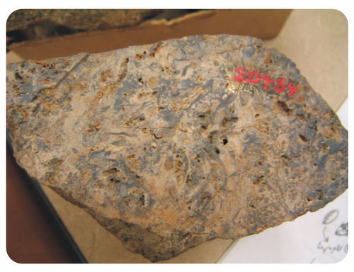
This rock contains fossilized fungi. The fungi lived 396 million years ago in what is now Scotland. They were preserved when they were covered with lava from a volcano. The lava cooled and hardened into rock.
For a long time, scientists considered fungi to be members of the plant kingdom because they have obvious similarities with plants. Both fungi and plants are immobile, have cell walls, and grow in soil. Some fungi, such as lichens, even look like plants (see Figure below ).
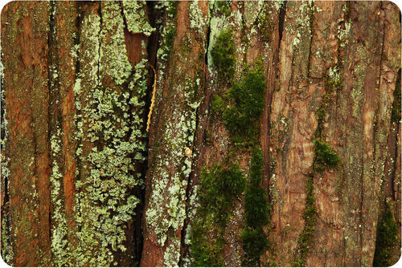
Moss (Plant) and Lichen Growing on Tree Bark. Both fungi and moss are growing on this tree. Can you tell them apart?
Today, fungi are no longer classified as plants. We now know that they have unique physical, chemical, and genetic traits that set them apart from plants (and other eukaryotes). For example, the cell walls of fungi are made of chitin, not cellulose. Also, fungi absorb nutrients from other organisms, whereas plants make their own food. These are just a few of the reasons fungi are now placed in their own kingdom.
Classification of fungi below the level of the kingdom is controversial. There is no single, widely-accepted system of fungal classification. Most classifications include several phyla (the next major taxon below the kingdom). Three of the most common phyla are compared in Table below .
Click on the image above to view the table
1. What are fungi?
2. List several habitats where fungi live.
3. Describe the general structure of multicellular fungi.
4. Identify ways that fungi spores may be dispersed.
5. Summarize the evolution of fungi.
6. State why fungi were once classified as plants.
7. Create a diagram to show the life cycle of a multicellular fungus.
8. Explain the significance of the chitin cell wall of fungi.
9. Compare and contrast a fungi spore and zygospore.
In this lesson, you read that fungi differ from plants in major ways. For example, unlike plants, fungi do not make their own food by photosynthesis.
Fungi lack chlorophyll, so they cannot make food by photosynthesis as plants can. Instead, they are heterotrophs, like animals. But they don’t have a mouth or teeth. So how do fungi “eat”? They get their nutrition by absorbing organic compounds from other organisms. The other organisms may be dead or alive, depending on the fungus.
Most fungi get organic compounds from dead organisms. They are decomposers called saprotrophs. A saprotroph feeds on any remaining organic matter after other decomposers do their work. Fungi use enzymes to digest organic remains and then absorb the resulting organic compounds. As decomposers, fungi are vital for the health of ecosystems. They break down nonliving organic matter and release the nutrients into the soil. Plants can then use the nutrients and pass them on to herbivores and other consumers.
Bacteria are also major decomposers, but they can grow and feed only on the exposed surfaces of organic matter. In contrast, fungi can use their hyphae to penetrate deep into organic matter. Fungi are also the only decomposers that can break down tough plant substances, including lignin (in wood) and cellulose (in plant cell walls). They have special enzymes to do this work. The enzymes are released by the tips of the hyphae. Because of these abilities, fungi are the primary decomposers in forests (see Figure below ).
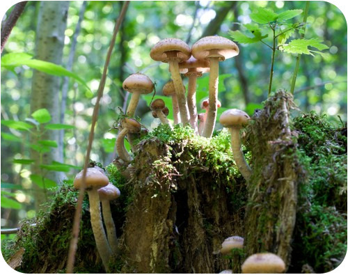
Forest Decomposers. These forest mushrooms may look fragile, but they do a powerful job. They decompose dead wood and other tough plant material.
Not all fungi feed on dead organisms. Many are involved in symbiotic relationships, including parasitism and mutualism.
In a parasitic relationship, the parasite benefits while the host is harmed. Parasitic fungi live in or on other organisms and get their nutrients from them. Fungi have special structures for penetrating a host. They also produce enzymes that break down the host’s tissues.
Parasitic fungi often cause illness and may eventually kill their host. They are the major cause of disease in agricultural plants. Fungi also parasitize animals, such as the insect pictured in Figure below . Fungi even parasitize humans. Did you ever have athelete’s foot? If so, you were the host of a parasitic fungus. You can read more about fungi and human disease in the last lesson of this chapter.
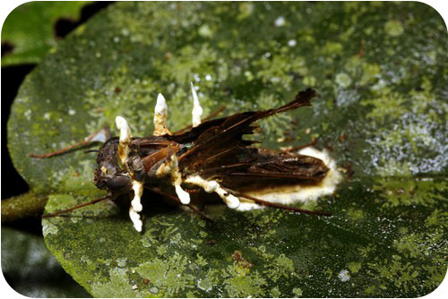
Parasitic Fungus and Insect Host. The white parasitic fungus named Cordyceps is shown here growing on its host—a dark brown moth.
Fungi have several mutualistic relationships with other organisms. In mutualism, both organisms benefit from the relationship. Two common mutualistic relationships involving fungi are mycorrhiza and lichen.
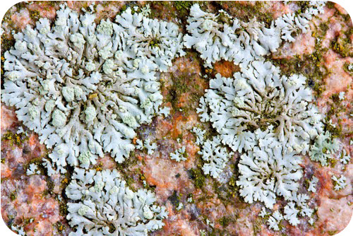
Lichen Growing on Rock. Unlike plants, lichen can grow on bare rocks because they don’t have roots. That’s why lichens are often pioneer species in primary ecological succession. How do lichen get water and nutrients without roots?
Some fungi have mutualistic relationships with insects. For example:
Whenever you eat pizza, you eat fungi, even if you don’t like your pizza with mushrooms. That’s because pizza dough contains yeast. Do you know other foods that are made with fungi?
Humans have collected and grown mushrooms for food for thousands of years. Figure below shows some of the many types of mushrooms that people eat. Yeasts are used in bread baking and brewing alcoholic beverages. Other fungi are used in fermenting a wide variety of foods, including soy sauce, tempeh, and cheeses. Blue cheese has its distinctive appearance and flavor because of the fungus growing though it (see Figure below ).
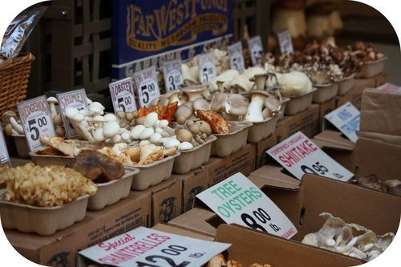
These are just a few of the many species of edible mushrooms consumed by humans.
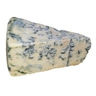
Blue Cheese. The dark blue strands running through this cheese are a fungus. In fact, this cheese is moldy! The fungus is Penicillium roqueforti, a type of mold.
Harmless fungi can be used to control pathogenic bacteria and insect pasts on crops. Fungi compete with bacteria for nutrients and space, and they parasitize insects that eat plants. Fungi reduce the need for pesticides and other toxic chemicals.
Fungi are useful for many other reasons.
1. How do fungi obtain organic compounds from dead organisms?
2. Why are fungi the primary decomposers in forests?
3. How significant are fungi as plant parasites?
4. Describe an example of a mutualistic relationship between fungi and insects.
5. List several ways that humans use fungi.
6. Assume that you notice a fungus growing on a plant. What possible relationships might exist between the fungus and the plant? What type of evidence might help you identify which is the correct relationship?
7. Compare and contrast mycorrhiza and lichen.
8. Explain how fungi might have allowed early plants to colonize the land.
You read in this lesson that many fungi are parasites, and they make their hosts sick. An example in humans is athlete’s foot.
Protists and fungi may seem defenseless, but they can be deadly. Both are important causes of disease and death in other living things—including humans.
Most protist diseases in humans are caused by animal-like protists, or protozoa. Protozoa make us sick when they become human parasites. Three examples of parasitic protozoa are described below.
Members of the genus Trypanosoma are flagellate protozoa that cause sleeping sickness, which is common in Africa. They also cause Chagas disease, which is common in South America. The parasites are spread by insect vectors. The vector for Chagas disease is shown in Figure below . Trypanosoma parasites enter a person’s blood when the vector bites. Then they spread to other tissues and organs. The diseases may be fatal without medical treatment.
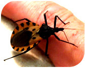
Vector for Chagas Disease. In Chagas disease, the Trypanosoma parasite is spread by an insect commonly called the “kissing bug.” A bite from this bug could be the kiss of death.
The discovery of Chagas disease is unique in the history of medicine. That’s because a single researcher—a Brazilian physician named Carlos Chagas—single-handedly identified and explained the new infectious disease. In the early 1900s, Chagas did careful lab and field studies. He determined the pathogen, vector, host, symptoms, and mode of transmission of the disease that is now named for him.
Giardia are flagellate protozoa that cause giardiasis . The parasites enter the body through food or water that has been contaminated by feces of infected people or animals. The protozoa attach to the lining of the host’s small intestine, where they prevent the host from fully absorbing nutrients. They may also cause diarrhea, abdominal pain, and fever. A picture of a Giardia protozoan opens this chapter.
Plasmodium protozoa cause malaria . The parasites are spread by a mosquito vector. Parasites enter a host’s blood through the bite of an infected mosquito. The parasites infect the host’s red blood cells, causing symptoms such as fever, joint pain, anemia, and fatigue.
Malaria is common in tropical and subtropical climates throughout the world (see Figure below ). In fact, malaria is one of the most common infectious diseases on the planet. Malaria is also a very serious disease. It kills several million people each year, most of them children.
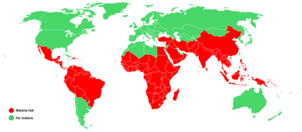
Worldwide Distribution of Malaria. This map shows where malaria is found. The area is determined by the mosquito vector. The mosquito can live year-round only in the red-shaded areas.
Fungi cause human illness in three different ways: poisonings, parasitic infections, and allergic reactions.
Many fungi protect themselves from parasites and predators by producing toxic chemicals. If people eat toxic fungi, they may experience digestive problems, hallucinations, organ failure, and even death. Most cases of mushroom poisoning are due to mistaken identity. That’s because many toxic mushrooms look very similar to safe, edible mushrooms. An example is shown in Figure below .
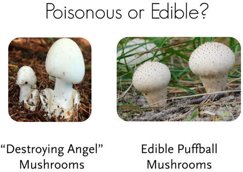
Poisonous or Edible? The destroying angel mushroom on the left causes liver and kidney failure. The puffball mushroom on the right is tasty and harmless. Do you think you could tell these two species of mushrooms apart?
Some fungi cause disease when they become human parasites. Two examples are fungi in the genera Candida and Trichophyton.
Figure below shows signs of these two infections.
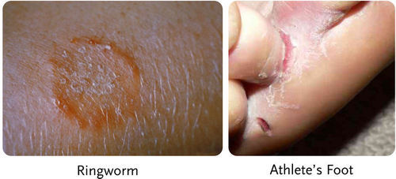
Ringworm produces a ring-shaped rash, but it isn’t caused by a worm. It’s caused by the same fungus that causes athlete’s foot.
Mold allergies are very common. They are caused by airborne mold spores. When the spores enter the respiratory tract, the immune system responds to them as though they were harmful microbes. Symptoms may include sneezing, coughing, and difficulty breathing. The symptoms are likely to be more severe in people with asthma or other respiratory diseases. Long-term exposure to mold spores may also weaken the immune system.
Molds grow indoors as well as out. Indoors, they grow in showers, basements, and other damp places. Homes damaged in floods and hurricanes may have mold growing just about everywhere (see Figure below ). Indoor mold may cause more health problems than outdoor mold because of the closed, confined space. Most people also spend more time indoors than out.
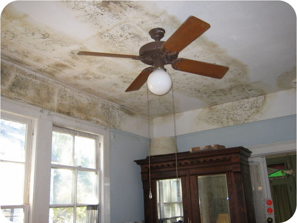
The mold growing on the walls and ceiling of this storm-damaged home may be harmful to human health.
1. Describe how the protozoa that cause Chagas disease are spread to human hosts.
2. State why malaria is commonly found only in tropical and subtropical regions of the world.
3. How does mold cause allergies?
4. State why indoor mold may cause more health problems than outdoor mold.
5. Terri lost her water bottle while hiking in Canada. It was a hot day, so she drank water from a stream to stay hydrated. A few days later, Terri became ill with abdominal pain, fever, and diarrhea. Her doctor thinks she has a protozoan infection. Which type of protozoa do you think is most likely responsible for Terri’s illness? How do you think Terri became infected?
6. Explain why you should never eat mushrooms you find in the woods unless you know for certain which type of mushrooms they are.
7. Compare and contrast ringworm and athlete’s foot.
In this chapter you learned about two kingdoms of Eukarya, the protists and fungi. In the next chapter, you’ll learn about another kingdom of Eukarya, the plants.
Opening image copyright Sebastian Kaulitzki, 2010. http://www.shutterstock.com . Used under license from Shutterstock.com.
For Table above , from top to bottom,
For Table above , from top to bottom,
For Table above , from top to bottom,
{kind=link}
{kind=link}
{kind=link}
{kind=link}
{kind=link}
{kind=link}
{kind=link}
{kind=link}
{kind=link}
{kind=link}
{kind=link}
{kind=link}